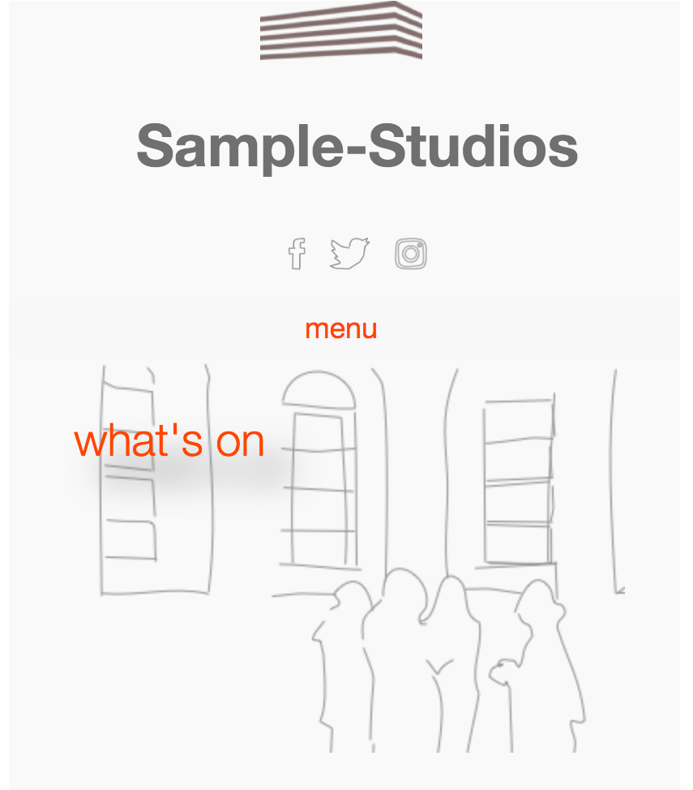
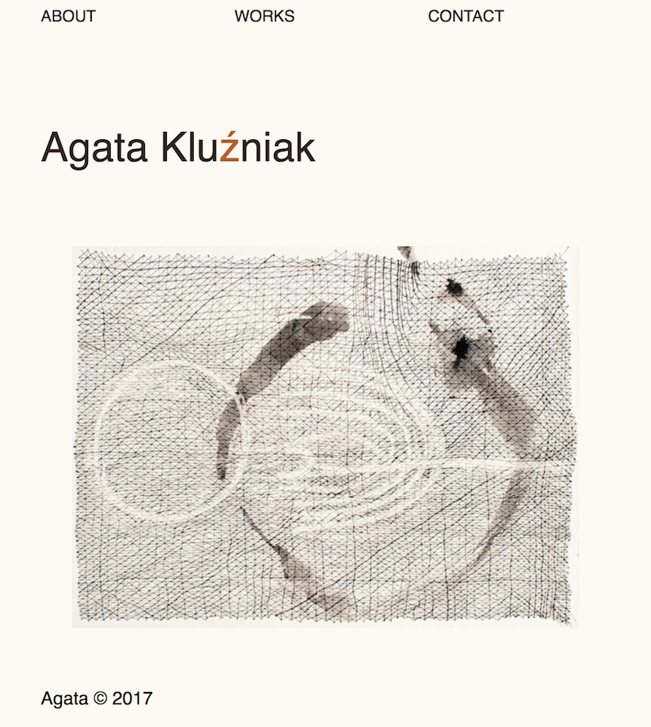

Web design:
say stop to standards
For many, today, to build a web-site is "no-brainer". The number of, and concurence between different platforms is so huge that it makes forget a simple evidence that you can do everything without them. Much better and, differently. Of course, it demands some more practical knowledge than "drag and drop", but can we produce a bearable music sound without practising, at least little bit, an instrument?
The exact percentage of websites "proudly powered by Wordpress" (and other Wix) isn't known (some evoke 50% of all sites). But it is obvious, these platforms standardised the interface and tend to reduce our individual user experience toward unified automatised behaviors: indeed, a large majority of WP sites uses "free" templates without any substantial change. Just like low cost global tourism, destroying the authenticity of touristic spots, the low cost web sites destroy the authenticity of information (in the case there is some) and lead to explosion of the amount of sites which informational and aesthetic value is unclear.
Today, the CO2 emissions due to Internet storage and activity are equal...to those, from civil aviation (each one is responsable of 2% of all CO2 emmissions).
The average site powered by Wordpress uses less than 10% of available functionalities (which are largely extended to support any kind of site). To set a simple, 5-10 pages website on WP, is like go to buy your bread on the corner with a 40t lorry. And if it is about personal storytelling, Medium offers much more adequat solution.
We need to apply to the web the same ecology that we promote for our planet: less consumption, more quality, DYI versus standard, sustainable versus disposable.
Sample Studios website
I realised this project in the begining of 2018, during my work placement following a training course in Web Design on CETB. I used a Grid CSS (reliesed in 2017)and learnt, on this occasion, to work with Sketch. Once finished, I adapted Perch, a small CMS co-created by Rachel Andrew (advocate of Grid, author of amizing documentation about). This PHP CMS fits to the real size of your site and is extremely flexible and robust.
My UX goal was to avoid too obvious and repetitive, prefering clarity and conciseness.
From an aesthetic point of view, I choosed the "transparency" effect, simplicity mixed with hand-drawing.
site for artist

My aim, while learning web design/front-end dev. was to work for artists and art related insitutions. While this nice intention went in front of a reality of state and support of visual arts in Ireland, I continue to pretend that a (co)creative process of designing artists' web presence is one of the most inspiring in the field.
This site is my first one, made for a friend, using Grid CSS and Javascript. I tried to leave as more as possible space and breath to the pictures by evacuating all unnecessary element.